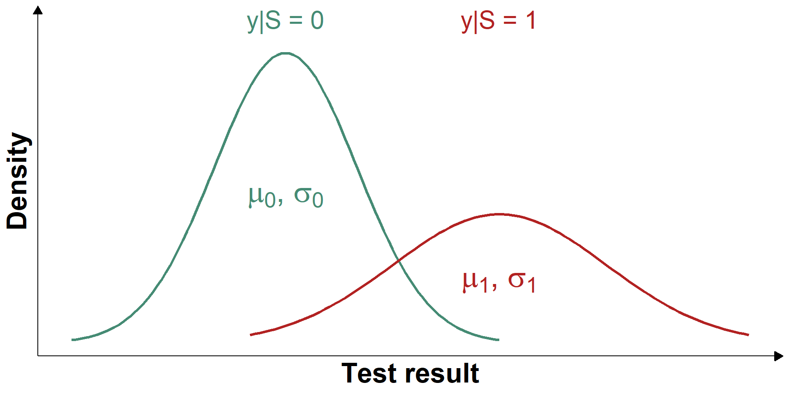

Evaluation and application of a Bayesian Hidden Markov Model to the surveillance of BVDV
SVEPM Conference, Berlin
Aurélien Madouasse ![]()
BIOEPAR (Oniris, INRAE)
2025-03-28
Incorporating test uncertainty and temporal correlation in determining true herd status with HMMs
- Hidden Markov Models (HMMs) are statistical models representing a latent, time-dependent variable:
- Latent and discrete: The variable of interest (e.g., herd infection status: infected/uninfected) is not observed directly
- Imperfectly measured: Observations (test results) are subject to error, with sensitivity and specificity less than 1
- Markovian dynamics: Time is discrete; the true status at each time point depends only on the status at the previous time point.

An HMM integrating continuous test results
- Similarities with the STOC free model:
- Latent status (\(S\)) with Markovian dynamics
- Monthly time step
- Difference:
- Test results (\(y\)) modelled as a mixture of 2 normal distributions instead of binary outcomes


Simulated scenarios
- 6 scenarios were simulated to reflect a range of plausible values for the different model parameters
| Sc | \(\tau_1\) | \(\tau_2\) | \(\mu_0\) | \(\mu_1\) | Cut-off | Se | Sp |
|---|---|---|---|---|---|---|---|
| 1 | 0.1 | 0.85 | 25 | 75 | 50.0 | 0.95 | 0.95 |
| 2 | 0.1 | 0.85 | 25 | 50 | 37.5 | 0.79 | 0.79 |
| 3 | 0.1 | 0.85 | 30 | 50 | 37.5 | 0.79 | 0.69 |
| 4 | 0.1 | 0.85 | 25 | 45 | 37.5 | 0.69 | 0.79 |
| 5 | 0.2 | 0.70 | 25 | 75 | 50.0 | 0.95 | 0.95 |
| 6 | 0.4 | 0.40 | 25 | 75 | 50.0 | 0.95 | 0.95 |


- In all scenarios: \(\sigma_0 = \sigma_1 = 15\)
- Simulated continuous values were dichotomised using a cut-off that maximised sensitivity and specificity